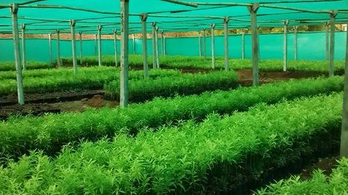

चंदन विषयी माहिती

चंदन
चंदन रोपांची लागवड करताना सुरू, मॅझियम, जांभूळ, डाळिंब, पेरू, करवंद, नीम, मेलिया डुबिया उपयुक्त सहयोगी
वनस्पतींची लागवड करावी.
सुरवातीच्या काळामध्ये चंदनाच्या रोपांभोवती ५ ते १० तुरीची रोपे लावावीत. सुरवातीची तीन वर्षे चांगली निगा घ्यावी.
रोपांना योग्य मात्रेत खत आणि पाणी दिल्याने जोमदार वाढ होते.
चंदन रोपांची लागवड ४ मीटर बाय ४ मीटर अंतराने करावी. चंदनाला सहयोगी वृक्षाची गरज असल्याने दोन चंदनाच्या मध्य
भागामध्ये एक वृक्ष प्रजाती लावावी. जेणेकरून त्याला कायमस्वरुपी आधार मिळेल.
उपयुक्त सहयोगी झाडांचा विचार करता चंदनाच्या बरोबरीने सुरू, मॅझियम, जांभूळ, डाळिंब, पेरू, करवंद, नीम, मेलिया
डुबिया इत्यादी वनस्पतींची लागवड करावी. सुरवातीच्या काळामध्ये चंदनाच्या रोपांभोवती ५ ते १० तुरीची रोपे लावावीत.
सुरवातीची तीन वर्षे चांगली निगा घ्यावी. चंदनाच्या रोपांची मुळे वृक्षाच्या मुळांशी जोडली गेल्यानंतर तूर काढावीत.
रोपांना योग्य मात्रेत खत आणि पाणी दिल्याने जोमदार वाढ होते. जास्त पावसाच्या प्रदेशात रोपांची लागवड ऑगस्ट
महिन्यामध्ये करावी.
चंदनाची खोड निर्मिती ७ ते १० वर्षांनंतर होते. व्यावसायिक काढणीचा काळ १५ वर्षांचा असतो.
चंदन लागवड करताना -
खासगी जमिनीमध्ये चंदनाची लागवड करण्यासाठी परवानगी लागत नाही. परंतु प्रजाती तोडण्यासाठी विभागीय वन अधिकाऱ्याकडे
परवानगी घेणे गरजेचे आहे.
चंदन एक संरक्षित वन प्रजाती आहे. त्याच्या तोडणीस आणि विक्रीस वनरक्ष कायदा १९५६ अंतर्गत पुरवठा परवानगी घेणे
आवश्यक आहे.
लागवड केल्यानतर जमिनीच्या सातबारा नमुन्यामध्ये नोंद करून घ्यावी. जमल्यास संबंधित वन अधिकाऱ्याचा आपल्या
प्रक्षेत्रावर चंदन लागवड असल्याचा दाखला प्राप्त करून घ्यावा.
श्वेत चंदनाचे महत्त्व
शास्त्रीय नाव - Santalum album
चंदन तेलाचे व्यावसायिक नाव - East Indian Sandalwood Oil
नैसर्गिकरीत्या चंदनाचा आढळ हा इंडोनेशियापासून न्यूझीलंडपर्यंत आहे.
वृक्ष सदापर्णी असून नैसर्गिकरीत्या भारतात सर्वत्र आढळतो. कर्नाटक, आंध्रप्रदेश, केरळ व तमीळनाडू राज्यात चंदन
मोठ्या प्रमाणात दिसते.
हा वृक्ष ४२ ते ४७ अंश सेल्सिअसपर्यंत तापमान सहन करू शकतो. परंतु हिवाळ्यात पडणारे दव,धुके यास सहन होत नाही.
चंदनाच्या खोडापासून ऊर्ध्वपातनद्वारे तेल काढले जाते. तेलाचा उपयोग अगरबत्ती, सौंदर्यवर्धक उत्पादने, सुगंधी
द्रव्ये आणि साबणामध्ये होतो.
चंदन तेलाचा उपयोग अत्तर आणि औषधनिर्मितीमध्ये होतो.
रक्त चंदनाचे महत्त्व
शास्त्रीय नाव - Pterocarpus Santalinus
याचा नैसर्गिकरीत्या आढळ सुक्या पानझडीत वनांमध्ये असतो. ही प्रजाती समुद्रसपाटीपासून १५० - ९०० मी. उंचीवर आढळते.
लाल, काळी आणि निचरा होणाऱ्या जमिनीत रक्त चंदनाची चांगली वाढ होते. याच्या वाढीसाठी ८८० ते १०५० मि. मी. पाऊस व
उष्ण - कोरडे हवामान लागते.
आंध्र प्रदेश, तमिळनाडू आणि कर्नाटकात रक्त चंदनाची लागवड दिसून येते.
लाकडाचा उपयोग फर्निचर,वाद्यनिर्मिती तसेच औषधनिर्मितीमध्ये होतो.
याची लागवड मराठवाडा, विदर्भात करता येते. कोकणामधील अती पावसाच्या भागात रक्तचंदनाची शेती करता येणार नाही; तयार
लाकडाच्या विक्रीसाठी सुलभ कायदेशीर बाजार नसल्याने त्याची लागवड करण्यास अजूनही प्रोत्साहन मिळत नाही.
रक्तचंदनाच्या तुलनेत श्वेत चंदनाची लागवड केल्यास त्याचा उपयोग तेलनिर्मिती, हस्तकलेसाठी होतो.
अर्ज सादर करताना लागणारी कागदपत्रे
वृक्ष तोडीचा नमुना नं.१
लागवड असलेल्या जमिनीचा सात बारा
लागवड असलेल्या जमिनीचा ८ अ
लागवड असलेल्या जमिनीचा नकाशा
लागवड असलेल्या जमिनीचा चतुःसीमा
१२ हेक्टरपेक्षा कमी जमीन असल्याचे प्रमाणपत्र
उन्नत व प्रगत गटात मोडत नसल्याबाबतचे प्रमाणपत्र
पुनः वृक्ष लागवड करणार असल्याचे हमी पत्र (१०० रुपयांचा बॉड पेपर)